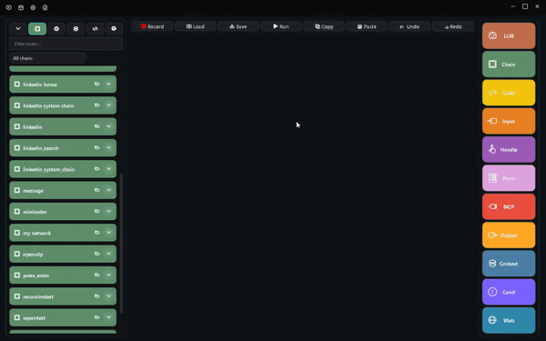

Build AI agents that see, reason, and act — entirely on your machine.
Arrow records any interaction once, composes it into a visual workflow graph, and runs it deterministically with local AI, local vision, local OCR, and local speech. No cloud. No telemetry. No per-token fees.
Everything runs locally
One platform for recording, composing, and running automation — with the AI, vision, OCR, and speech all on-device.
Visual workflow editor
Compose typed nodes into a graph — not scripts. Branch, loop, and nest chains.
Desktop recorder
Capture clicks, typing, scrolls, drags, clipboard, screenshots, and UI elements.
Web recorder
DOM-level browser capture via CDP. Selector-based sessions, never raw coordinates.
Local AI
llama.cpp and Ollama on-device reasoning. Your data never leaves the machine.
Vision & OCR
Multi-scale template matching, ONNX detection, and PaddleOCR to find and read any UI.
Speech
Piper neural TTS and Vosk offline STT for a hands-free voice mode.
Agent mode
The "system chain" is the agent's mind — chat overlay, phone client, chains as tools.
Orchestrator
A goal loop over mini-brain chains that keeps working until the job is done.
Memory & context
Persistent SQLite memory, retrieval, and consolidation across chains.
Deterministic + AI
The graph is a symbolic program; models add judgment only at the seams.
Scheduling & sandbox
Run on a schedule, or in an isolated RDP session off your active desktop.
Standalone export
Compile a system chain plus its assets into a single distributable .exe.
How it works
Three steps from idea to running agent.
Record
Capture a desktop sequence or browser flow once. Arrow grabs screenshots and UI elements along the way.

Compose
Connect nodes into a visual chain. Branch, loop, and nest. Add LLM, vision, OCR, and code nodes where they help.

Run
Execute deterministically with element-first grounding. Approvals and memory are just nodes you wire in.

Frontier-model capability, without the frontier model
Arrow gets more out of small local models through orchestration, grounding, and self-improvement — not raw compute.
Integrated coding agent
An Aider-style local-agent loop in the Code Node Studio writes, edits, and debugs Python inside your graph.
Apps composed from nodes
Sequence, web, LLM, vision, code, memory, and MCP nodes wired by ports — an app, not a script.
Anti-detection by design
Jittered clicks, curved mouse paths, variable timing, native CDP input, and a durable browser profile.
Small models, big results
Stepped protocols, single-token contracts, and a typed decision engine let a 3B local model do frontier work.
Learns from verified runs
Verified goals freeze into learned chains and memory consolidates — the library improves itself.
Element-first grounding
Resolve the live UI element before acting — survives moved windows, DPI, and theme changes.
Who it's for
From solo power users to enterprise automation teams.
Business process automation
Finance, HR, and ops teams building auditable, on-premise automation.
QA & testing engineers
Test agents that adapt to UI changes while staying deterministic.
IT operations
Maintenance and monitoring workflows with AI-driven decisions, locally.
AI enthusiasts
Neuro-symbolic agents powered by local models — no cloud, no fees.
Power users
Automate personal workflows with agents that keep your data on-device.
RPA developers
Visual validation, AI reasoning, and secure sandboxing in one tool.
Automation that stays on your machine.
Build your first Arrow agent — no cloud, no telemetry, no per-token fees.